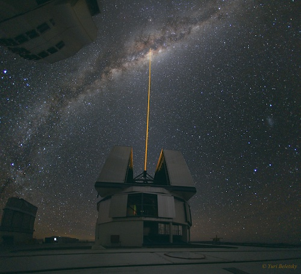

<!-- begin two column for figure -->
<div class="grid-container">
  <div class="grid-x grid-margin-x">
    <div class="cell small-12 medium-5">
      
    </div>
    <div class="cell small-12 medium-7">
      <p>Observational Astronomy (MPS227) is a compulsory first-semester course for second-year undergraduates doing
        dual-honours Physics and Astrophysics (BSc or MPhys).</p>

      <p>The aim of the course is to teach the practical skills to acquire and analyse astronomical imaging data.
        Assessment is via exam (60%), observing project (20%) and programming homeworks (20%).</p>
    </div>
  </div>
</div>